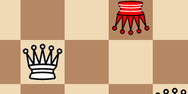
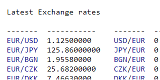
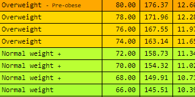
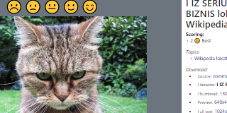
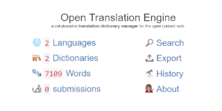
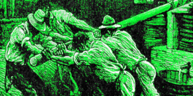
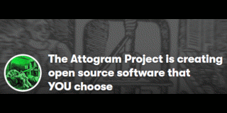

Eight Queens chess game. Can you place 8 queens on the board with none under attack? A web game inspired by the dreaded programmers interview question.
Tech: Javascript, React, Chessboard.jsx
Currency Exchange Rates Website with data from: The European Central Bank, The Swiss National Bank, The Bank of Israel, The Central Bank of the Russian Federation, and The Reserve Bank of Australia.
Tech: PHP 7, SQLite, Financial APIs
Multi-weight Body Mass Index (BMI) table based on your height, age and sex, with calculated Body Fat/Lean Percentage, Base Metabolic Rate (BMR) and Total Daily Energy Expenditure (TDEE) for various activity levels.
Tech: PHP 7
Crowdsourced ratings website for freely licensed images and media from Wikimedia Commons.
Tech: PHP, SQLite, Wikimedia API
A collaborative translation dictionary manager for the open content web. Started in 2001.
Tech: PHP, SQLite / MySQL
Our Git repository service provider. Starting in 2014 with the migration of the Open Translation Engine from sourceforge.
Support future developments!